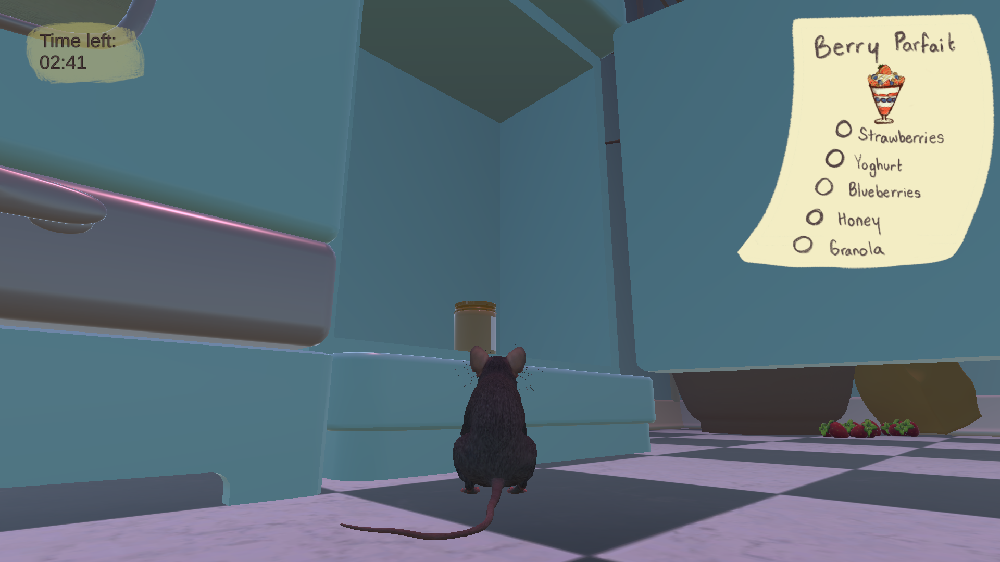

Bon Appetit
A culinary game where you are a little rat collecting ingredients
Overview
A tiny rat needs to procure food for the best rat restaurant in town. You must brave the kitchen during the day and night to find ingredients and bring them back to cook delicious meals.
Screenshots



My Contributions
- Created the helper rat AI that follows the player and assists with cooking
- Implemented the food gathering and inventory systems